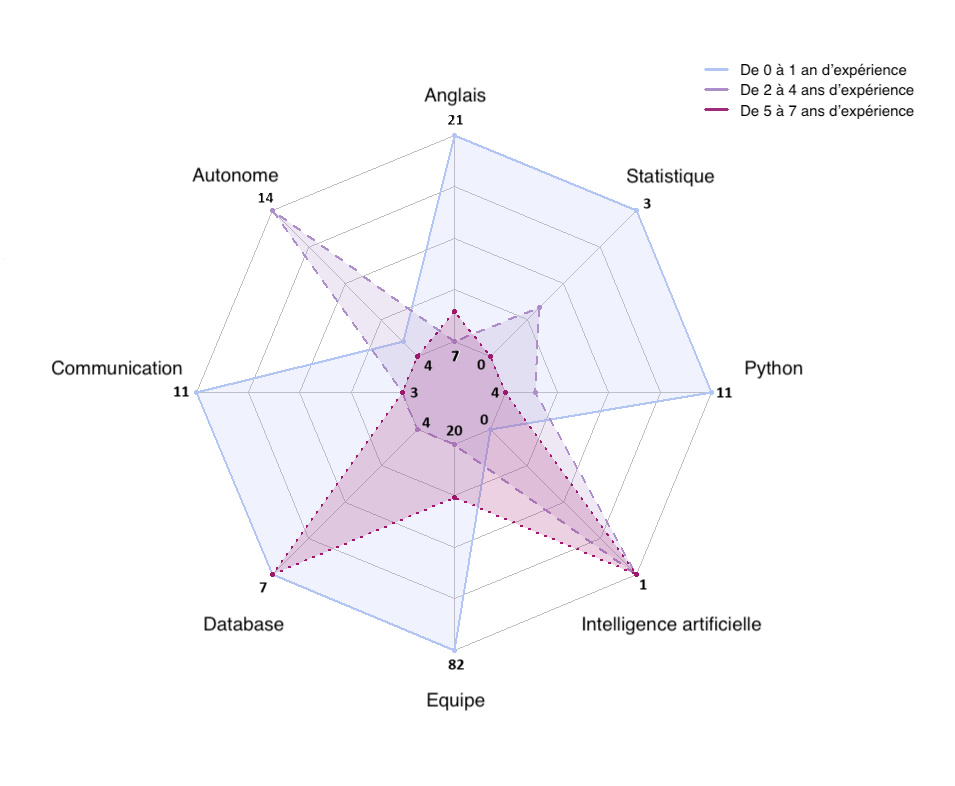

Analyse des données concernant les secteurs d'activité des entreprises
Les secteurs pondérés par le salaire moyen
Les secteurs pondérés par l'innovation
1. Analyse du premier wordcloud (secteurs pondérés par les salaires)
Pour ce premier wordcloud, les secteurs "Transport" et "Logistique" dominent largement, ils sont donc identifiés comme offrant des salaires compétitifs. En effet, les secteurs liés à la gestion et à la chaîne d'approvisionnement (logistique, transport, distribution) sont mis en avant, démontrant une forte valorisation salariale. Cela peut être dû à la demande croissante pour ces secteurs dans une économie mondialisée.
2. Analyse du deuxième wordcloud (secteurs pondérés par le nombre de brevets - innovation)
Pour ce deuxième wordcloud nous remarquons une plus grande diversité au sujet des secteurs mis en avant. Les termes "Industrie Auto", "Industrie Aéronautique", "Mécanique (Meca)" et "Aérospatial" ressortent comme les leaders en innovation. Nous observons également des secteurs comme "Chimie", "Biotechnologie" et "Secteur Informatique", qui sont bien représentés, reflétant leur forte orientation vers la recherche et le développement. Nous pouvons en conclure que les secteurs industriels et technologiques sont les moteurs de l'innovation, où l'effort en R&D conduit à la production de brevets.
3. Conclusion
Le premier wordcloud met davantage l'accent sur des secteurs orientés vers les services (ex. Logistique, Services aux entreprises), tandis que le deuxième wordcloud valorise des secteurs orientés vers l'industrie et la technologie (ex. Aérospatial, Biotechnologie, Mécanique). \ Le transport et la logistique, offrant de meilleurs salaires, sont beaucoup moins représentés en termes d'innovation, tandis que des secteurs comme l'automobile et l'aéronautique sont les leaders en innovation mais moins proéminents en terme de salaires. Pour un professionnel ou une entreprise, investir dans l'innovation dans des secteurs technologiques est clé pour rester compétitif sur le long terme. Cependant, les secteurs de la logistique et du transport peuvent offrir des opportunités financières immédiates. Un équilibre entre innovation et valeur économique peut être trouvé dans des secteurs comme l'aéronautique, qui figurent dans les deux dimensions.
Analyse des données concernant les compétences demandées dans les offres d'emploi
Les compétences pondérées par le salaire moyen
Les compétences pondérées par l'innovation
1. Analyse du premier wordcloud (compétences pondérées par le salaire moyen)
Sur ce wordcloud le terme "Statistique" domine largement, suivi de "Deep Learning", "Python" et "modélisation". Nous en déduisons aisément que les compétences mieux rémunérées se concentrent sur des compétences techniques spécifiques, notamment dans les domaines des données et du cloud.
2. Analyse du deuxième wordcloud (compétences pondérées par le nombre de brevets - innovation)
Ce wordcloud met en avant des compétences techniques et comportementales qui distinguent l'innovation. L'association de l'autonomie avec la collaboration en équipe montre une importance de l'équilibre entre le travail individuel et collectif pour générer de nouvelles idées. Par ailleurs, la présence de « Deep Learning » et de « modélisation » indique que l'innovation se concentre sur des compétences en intelligence artificielle et en analyse de données, ce qui reflète très bien le contenu de nos données.
3. Conclusion
Les compétences techniques comme le "Deep Learning" et les outils cloud sont cruciaux à la fois pour innover et pour obtenir un salaire élevé. Cependant, l'innovation semble exiger un équilibre entre soft skills (autonomie, communication) et techniques, tandis que le salaire est davantage lié à une spécialisation technique pointue. Pour maximiser à la fois innovation et rémunération, une combinaison de compétences techniques avancées (ex. Python, Deep Learning, statistique) et de compétences comportementales (ex. communication, collaboration) est essentielle. Cela met en avant l'importance d'un profil hybride capable de créer de la valeur dans les deux dimensions.
Analyse des données concernant les codes IPC des brevets
1. Salaires moyens par codes IPC
Les salaires moyens par code IPC
Les catégories A (Nécessités courantes de la vie), H (Électricité), et D (Textiles, papier) affichent des salaires moyens largement plus élevés que pour les autres catégories. Les secteurs comme E (Constructions fixes) et F (Mécanique, éclairage, chauffage), bien que représentant des domaines techniques importants, montrent des salaires plus modestes. Cela indique que les métiers liés aux domaines essentiels ou technologiques avancés (comme l’électricité) offrent de meilleures rémunérations.
2. Répartition des offres d'emploi par code IPC
La répartition des offres d'emploi par code IPC
La répartition montre une forte concentration des offres dans les catégories A (Nécessités courantes de la vie) et H (Électricité), reflétant leur poids économique. Les catégories comme D (Textiles, papier) et E (Constructions fixes) ont une faible part des offres, suggérant une spécialisation plus limitée ou une demande réduite. Ce graphique ne prend cependant pas en compte la plupart des entreprises, pour lesquelles nous n'avions pas de données sur les codes IPC, ce qui représente plus de 50% des entreprises.
3. Nombre de brevets par code IPC
Le nombre de brevets par code IPC
Les brevets sont largement dominés par les catégories A (Nécessités courantes de la vie), H (Électricité), et B (Techniques industrielles, transports). Ces catégories reflètent des domaines où l’innovation est particulièrement active, répondant à des besoins fondamentaux (catégorie A) ou soutenant des secteurs technologiques et industriels clés (catégories B et H). La catégorie G (Physique) et d'autres domaines techniques suivent, mais avec un volume de brevets moindre comparé aux trois catégories dominantes. Les catégories A et H se démarquent non seulement par leur volume élevé de brevets, mais également par leurs salaires moyens très élevés, montrant une forte valorisation de ces secteurs sur le marché du travail. En revanche, la catégorie B, bien qu’innovante, ne figure pas parmi les secteurs offrant les rémunérations les plus élevées.
4. Conclusion
L’analyse des salaires, des offres d’emploi et des brevets par code IPC met en lumière des dynamiques intéressantes :
- Les catégories A (Nécessités courantes de la vie) et H (Électricité) se distinguent comme des secteurs particulièrement valorisés, combinant des salaires moyens très élevés, une forte demande sur le marché de l’emploi, et un volume important de brevets. Cela reflète leur double rôle économique, à la fois dans la satisfaction des besoins essentiels et dans les avancées technologiques.
- La catégorie B (Techniques industrielles, transports), bien qu’innovante avec un grand nombre de brevets, n’offre pas des rémunérations aussi élevées, suggérant une valorisation plus technologique qu’économique sur le marché.
- Les catégories E (Constructions fixes) et F (Mécanique, éclairage, chauffage), pourtant fondamentales dans les infrastructures et l’industrie, montrent une présence plus modeste en termes de salaires et d’offres d’emploi, ce qui peut s’expliquer par une spécialisation plus restreinte ou une dynamique de marché différente.
- Enfin, la proportion importante d’entreprises sans données IPC (plus de 50 %) souligne une limite dans l’analyse des offres d’emploi, mais n’affecte pas les tendances générales observées dans les secteurs bien représentés.
Analyses sur les villes
Les disparités entre villes montrent que Paris domine en termes de salaires et d'innovation, mais d'autres villes comme Nancy et Grenoble se démarquent également pour l'innovation.

Salaires moyens et innovation dans les villes
Les villes industrielles ou fortement technologiques comme Nancy, Boulogne-Billancourt, et Vélizy-Villacoublay dominent, avec un grand nombre de brevets déposés. On note une forte représentation des villes proches de grands centres économiques ou technologiques (par exemple, Grenoble pour la recherche technologique, Amiens pour les industries). Contrairement au graphique des salaires, l’innovation semble davantage concentrée dans des zones spécifiques, souvent liées à des écosystèmes industriels.
Conclusion
Les villes offrant les salaires moyens les plus élevés ne sont pas toujours les plus innovantes, suggérant que l’innovation et la rémunération ne sont pas systématiquement corrélées. Les salaires élevés sont répartis de manière plus homogène entre les différentes régions, tandis que l’innovation est concentrée dans des pôles technologiques et industriels bien définis.
Analyse sur les départements
Dans ce graphique nous pouvons voir que les salaires varient considérablement selon les départements, mais Paris (75) domine largement avec un salaire moyen supérieur à 120 000 euros par an, en moyenne.
- D'autres départements, tels que Lyon (69) et probablement des métropoles dynamiques comme Toulouse (31), se démarquent par des salaires compétitifs, bien qu'ils restent loin de Paris.
- Les départements avec un grand nombre de brevets (bleu) ne montrent pas systématiquement des salaires plus élevés que ceux ayant un niveau d'innovation faible (rose clair). Certains départements ayant peu de brevets affichent des salaires moyens compétitifs, suggérant que d'autres facteurs influencent davantage la rémunération (économie locale, type d'industrie, structure des emplois, etc.).
- Il est important de souligner que Paris (75), étant la capitale de la France, est un cas à part avec une concentration importante d'entreprises et d'opportunités à haute rémunération.
- Lyon (69) et d'autres départements dynamiques présentent également une combinaison favorable d'opportunités d'emploi bien rémunéré.
- Ce graphique met en évidence qu'il ne semble pas avoir de corrélation directe et systématique entre le niveau d'innovation (mesuré par les brevets) et les salaires. Cependant, il est important de préciser que parmi les données que nous avons traitées, il manquait des informations concernant les salaires et les nombres de brevets déposés par entreprise ce qui peut limiter l'apparition de corrélation entre ces données.
- Ici, les différences salariales semblent être davantage liées à la concentration économique, à la structure des industries locales, et à la taille du marché de l'emploi (avec Paris en tête, suivi de Lyon). L'innovation, bien qu'importante, ne joue pas un rôle central et pourrait être un facteur parmi d'autres, elle ne suffit pas pour expliquer les écarts salariaux significatifs observés dans ce graphique.
Analyse sur les compétences et les années d'expérience demandées

Le nombre d'offres d'emploi selon les compétences et les années d'expérience requises